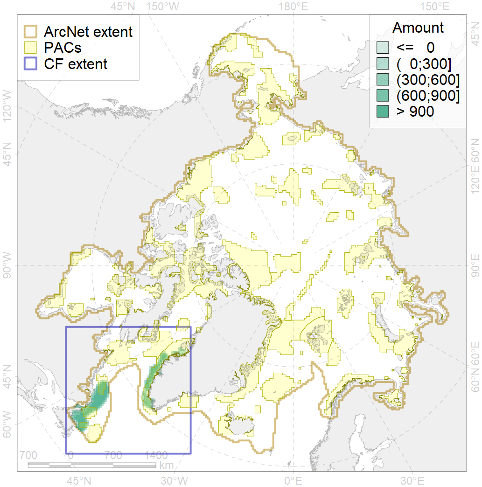
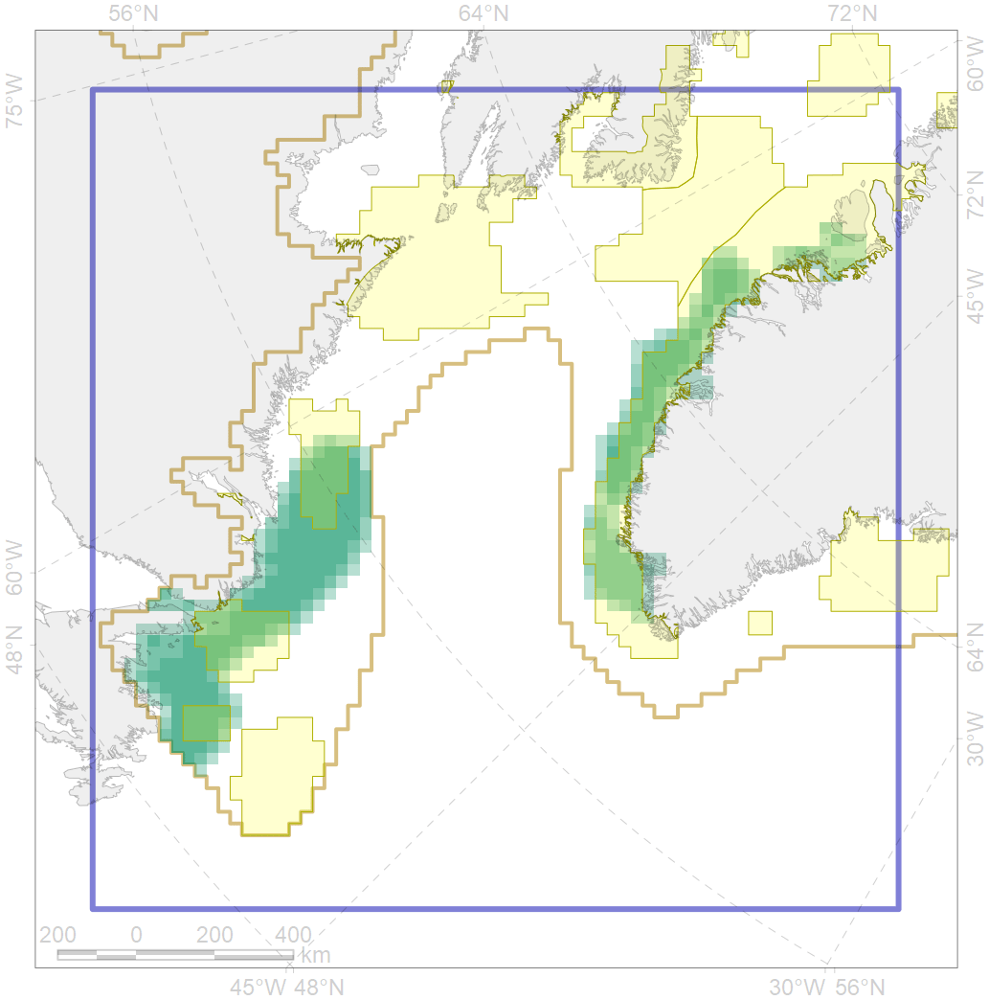

5060

| CF ID | 5060 |
| CF Name | Humpback whale summer feeding areas in the Northwest Atlantic |
| Time Period | 1986-2016 |
| Source(s) | Stevick et al 2006; Heide-Jorgensen and Laidre 2007; Smith and Pike 2009; Christensen et al 2016; Hansen et al 2018 |
| Seasonality | June-September |
| Depth Horizon | 0-300 |
| Methodology | Aerial and ship surveys |
| Author Name | Filatova |
| Notes | |
| Conservation Target Set in the Scenario | 0.24 |
| Conservation Target Achieved in the Scenario | 0.526 (Scenario: 219.0%) |
| PAC ID | Proportion in the PAC | Contribution to ArcNet Target Achievement | PAC’s Contribution to the Achieved Target |
|---|---|---|---|
| 44 | 31.3% | 123.4% | 56.4% |
| 77 | 8.2% | 32.3% | 14.7% |
| 79 | 9.6% | 32.7% | 14.9% |
| 80 | 4.0% | 14.1% | 6.4% |
| inner | 53.1% | 202.5% | 92.5% |
| outer | 46.9% | 16.5% | 7.5% |